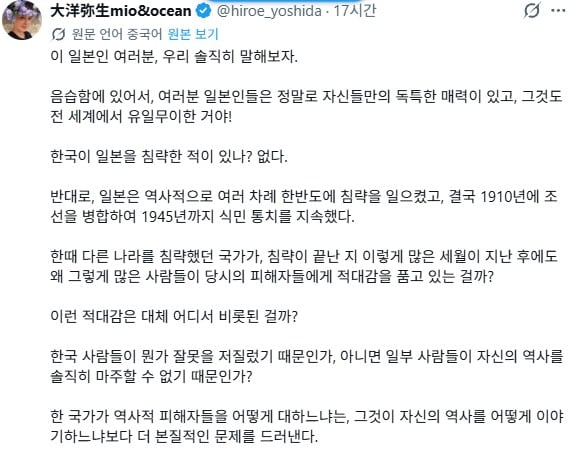

중국인이 한국인을 위해 일본인을 팬다
이것이 동아시아의 일상

중국인이 한국인을 위해 일본인을 팬다
이것이 동아시아의 일상
애초에 중국 현지가면 압도적으로 한국 이미지가 일본보다 좋긴함..
사실 그냥 보통(중국은 쪼오금 기준이 높겠지만..) 사람들끼리 만나면 어지간하면 세나라가 친해지는게 대부분의 경우긴 하잖아.. 정치적인 무엇과는 좀 다른 영역이지
그리고 셋의 라이벌리가 세나라를 같이 향상시키는 경향이 분명히 있는거 같음. 동아시아 3국이 사실 세계적으로 제일 선진하고 부강한 나라(중국은 도시별로 좀 다르지만..)안에 들어가니까
피해자를 혐오하는 나라다운 발상
완벽한 트라이앵글
개인적으로 제일 싫어 하는 사람중에 하나가
본인을 피해자 서사에 넣어서 생각하는 사람들이 좀있음
역겹지
본인을 가해자 서사에 넣어서 생각하는 사람들도 있나 그러면
있을수도 없을수도 있겠지만 최소한 본인만 피해자라고 생각하는 사람은 피해야지
아주 바람직하다
???: 때린 내 맘을 불편하게 하는 니들이 가해자
약해서 나한테 쳐맞은 피해자 주제에 왜 착한 내 이미지에 흠을 가게하지? 화나네?
라는 마인드는 의외로 주변에서 많이 찾아볼수가 있다
대마도 정벌 이나 원 침공에 꼽사리 낀거라면 있긴 한데
신라구랑 원나라 침공말곤 없는데
일본 까는데 만큼은 동맹이지
둘다 저새끼들한테 유대인보다 더 많은 사람이 살해당한 국가들이니까 ㅋㅋㅋㅋㅋㅋㅋㅋ
히틀러 육변기나 하던 나라가 졷같은 소리 하면 줘패야댐
사실: 지옥의 악마들은 '음습함' 이란 단어를 일본인에게서 배웠다
천하삼분지계(한중일 나뉘어서 맨날 쳐싸움)